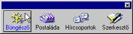
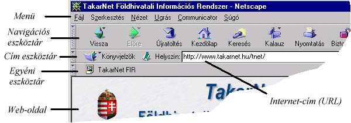
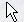
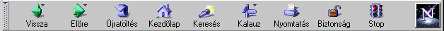
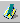
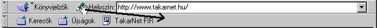

1. A Netscape
Navigator/Communicator telepítése
2. A Netscape plugin-ek
telepítése
3. Profilbeállítás (csak a
Communicator-ban!)
4. A böngészõablak
felépítése
5. Az információs oldalak
felépítése
6. Az ûrlapok használata
7. A navigációs
eszköztár (Navigation Toolbar)
8. A cím eszköztár
(Location Toolbar)
9. Az egyéni eszköztár
(Personal Toolbar)
1. A Netscape Navigator/Communicator
telepítése
Elsõ lépésként Windows 3.1x vagy Windows NT 3.51 használata
esetén nyissuk ki a File Manager-t, Windows 95 vagy Windows NT
4.0 környezetben pedig a Windows (NT) Explorert. A CD-rõl való
telepítést a Netscape CD-ROM megfelelõ könyvtárában
található setup.exe elindításával kezdhetjük meg. Az
Internetrõl letölthetõ Communicator a letöltött
önkicsomagoló cxYYe404.exe fájl elindításával
telepíthetõ. Az x helyén szerepelhet b, c vagy p,
attól függõen, hogy az alapcsomagot (base), a teljes
csomagot (complete) vagy a professzionális (professional)
változatot töltöttük le. Az YY jelöli a Windows
típusát, ami 16 (Windows 3.1x) vagy 32 (Windows95
vagy NT) lehet. A Navigator teleptõfájljának a neve nYYe404.exe
vagy nYYe304.exe alakú, ahol az YY szintén az
operációs rendszert jellemzi. Ha a fájl 'g' betûvel kezdõdik
('n' helyett), akkor az a HTML-szerkesztõvel bõvített, ún.
Gold változat.
Egy rövid üdvözlést követõen telepítõ melegen ajánlja, hogy a sikeres telepítés érdekében lépjünk ki a párhuzamosan futó windows-os alkalmazásokból. Ha ezt megtettük a Next gomb megnyomására megjelenõ ablakban elolvashatjuk a felhasználói licenszszerzõdést, melyet az Accept gomb megnyomásával fogadhatunk el, a telepítés csak ezután folytatódik.
A Communicator-t kétféle konfigurációban telepíthetjük. Az elsõ az tipikus (Typical) konfiguráció, amely a legtöbb számítógépre nézve optimális. Az egyedi (Custom) konfigurációt "profi" felhasználóknak és rendszergazdáknak ajánlják. Az ablak alján a telepítés célkönytárát jelölhetjük meg, majd a Next gombot megnyomva lépünk tovább.
Ha az egyedi telepítést választottuk, akkor a megjelenõ ablakban láthatjuk a Communicator komponenseit. A nevek melletti négyzetbe pipát téve jelölhetjük ki az adott modult telepítésre. Egyes komponenseknek ún. alkomponensei vannak, ezeket a szomszédos mezõben láthatjuk. Ha a nevek mellet kis négyzeteket találunk, akkor egyenként jelölhetjük ki azok telepítését. A telepíteni kívánt modulok kiválasztása után nyomjuk meg a Next gombot.
A következõ lapon néhány jellemzõen internetes vagy ahhoz szorosan kapcsolódó fájltípusokat társíthatunk a Communicator-hoz. A fájltípus melletti négyzetet kiválasztva engedélyezzük a társítást. A telepítõ által kínált társítást ajánlott elfogadni (de legalább a 'Hypertext Markup Language' legyen kipipálva).
A következõ ablakban megadhatjuk, hogy a program-ikonokat melyik Program Manager ablakba vagy Program Folder-be helyezze a telepítõ, majd a Next gombbal lépünk tovább. Mielõtt elkezdõdne a fájlok másolása, egy ablakban megtekinthetjük a telepítési konfigurációt. Ha ez megfelel az elvárásainknak, akkor az Install gomb megnyomásával kezdhetjük meg a tényleges telpítést. Ha valamelyik beállítást módosítani szeretnénk, a Back gomb ismételt megnyomásával visszaléphetünk abba az ablakba, ahol ezt elvégezhetjük.
A telepítést bármikor megszakíthatjuk a Cancel gomb megnyomásával.
A fájlok másolása utánha kérjükelolvashatjuk a szoftverrel kapcsolatos
fontos információkat tartalmazó README fájlt. Ezzel befejezõdött a
Communicator telepítése, a Windows újraindítása után elkezdhetjük a böngészén—ha
2. A Netscape plugin-ek telepítése
A plugin-ek, vagy más néven bedolgozók olyan programok, melyek valamilyen funkcióval kiterjesztik a Communicator lehetõségeit. A plugin-ek háromféleképpen mûködhetnek. Egy plugin lehet beágyazott, teljes ablakban futó vagy rejtett. A beágyazott plugin-ek egy HTML oldalnak csak egy részét foglalják el. A rejtett plugin-ek a háttérben futnak. Bizonyos plugin-ek már a Netscape telepítésekor felkerülnek a gépünkre, míg másokat "kézzel" kell telepíteni..
3. Profilbeállítás (csak a
Communicator-ban!)
A Communicator eredményes használatához néhány hálózatra jellemzõ, valamint személyes információt be kell állítani. Ilyen például az email címünk a levelezéshez, a news szerver címe a Usenet News olvasáshoz, stb. Munkánk során speciális adatbázisok szolgálják kényelmünket, mint a címjegyzék, a kedvenc web oldalainkat magába foglaló könyvjelzõgyûjtemény és a korábban látogatott oldalak adatait tároló History lista.
Gyakran elõfordul, hogy egy számítógépet több személy használ, vagy egy felhasználónak több szolgáltatón keresztül van Internet-elérése, ezért szükségesé válhat a beállítások elkülönítése. A Communicator a beállításokat és a személyes adatbázisokat ún. profilokba (profile) foglalja. Ilyen profil tetszõleges számban hozható létre a User Profile Manager program segítségével.
Egy profilt mindenképpen létre kell hozni, még akkor is, ha csak egy személy használja. Ha egynél több profilt hoztunk létre, a Communicator indulásakor megjelenik egy ablak, ahol kiválaszthatjuk, hogy melyik konfiguráció szerint akarunk dolgozni.
A Communicator elsõ indításakor el is indul a profil varázsló, segítségével pillanatok alatt létrehozhatjuk a profilunkat. Az elsõ ablakban két személyi adatoto kér:
Nyomjuk meg a Next gombot. A következõ lapon látható beállításokra javaslatot tesz a Communicator, ezeket érdemes elfogadni, de kedvünk szerint át is írhatjuk:
A levelek küldéséhez szükséges adatokat írhatjuk be a következõ ablakban. Mivel a nevünket és az email címünket már az elsõ lapon megadtuk, csak akkor módosítsuk, ha a levelezéshez más beállításokat szeretnénk használni. Ugyanezen a lapon kell beírni a küldendõ leveleinket továbbító szerver nevét is (Outgoing mail server).
A következõ lapon a levelek fogadásához szükséges adatokat adhatjuk meg:
A hírcsoportok, vitafórumok eléréséhez meg kell adnunk a news szerver paramétereit:
Ha a Navigator egy korábbi verzióját frissítjük, lehetõségünk van annak a beállításait átültetni a Communicator-beli profilunkba. Profilunk létrehozásakor három lehetõség közül választhatunk:
A Finish gomb megnyomásával befejezhetjük profilunk
létrehozását. Természetesen ezzel még nem végeztük el az
összes szükséges beállítást. A további beállításokat az
ún. preferences ablakokban végezhetjük el, melyek részletes
leírása a vonatkozó fejezetekben található. Az alapvetõ
információk megadásával (ha a szükséges hálózati
protokoll is telepítve van) a web böngészõ már futásra
kész.
4. A böngészõablak felépítése
Az Interneten/intraneten elérhetõ információs oldalak megjelenítésére a Navigator böngészõablak szolgál (a Communicatornak része).
Az elénk táruló, talán kissé bonyolultnak tûnõ ablak számos hasznos segédeszközt kínál az oldalak közti lépegetés, a navigáció megkönnyítésére. Egyszerre több böngészõ ablak is nyitva lehet, de ez - fõleg modemes elérés esetén - a letöltés lassulását eredményezheti. Addig érdemes több ablakot nyitni, amíg nem a mi Internet kapcsolatunk a szûk keresztmetszet. Még lassú modem esetén is találkozhatunk ilyen esettel, például, ha napközben próbálunk oldalakat lehozni messzirõl (külföldrõl), akár négy-öt ablak is nyitva lehet anélkül, hogy változna az amúgy is lassú átvitel. Ilyen helyzetekben persze - tekintve a kapcsolat költségeit - meg kell gondolnunk, hogy érdemes-e egyáltalán próbálkoznunk.
A böngészõablak mellett megjelenik egy másik kis ablak is, négy kis ikonnal. Ez a Modultár (Component Bar), ami a négy fõ funkció gyors elérését teszi lehetõvé. A hajókormányt ábrázoló ikonra bökve új böngészõ ablakot nyithatunk ki. A következõ gomb a bejövõ leveleinket tartalmazó (Posta/Inbox) levelesládánkat szimbolizálja. Megnyomásával a levelezõ, vagyis Messenger érhetõ el. A hírolvasó/csoportmunka modul, a Collabra a harmadik, képregényekbõl ismert "szövegfelhõket" ábrázoló gombbal hívható. A toll és papír cimkéjû gomb megnyomása a HTML szerkesztõ, a Composer ablak megnyitását eredményezi. A Modultár ablakát bezárva a Communicator ablakok alsó státuszsorának jobb szélére költözik le, bármelyik ablakból kínálva a gyors elérést.

A böngészõablak részletes megismeréséhez vegyük sorr a fõbb alkotóelemeit (ezek egy részét az alábbi ábra szemlélteti).

A felül látható három eszköztár (navigációs, helyszín és egyéni) sorrendje tetszõlegesen változtatható, csak meg kell fogni a mozgatni kívánt eszköztárot az egérrel, majd ráhúzni a három hely valamelyikére. Az eszköztárak bal szélén kis "fülek" láthatók. Rábökve valamelyik fülre az adott ezközsáv eltûnik, a fül megjelenik a fennmaradó sávok alatt. Ugyanígy mindhárom eszköztár eltüntethetõ, illetve a megfelelõ fülre rábökve az eszköztár újra elõhozható.
Eltüntethetõ ill. visszahozható egy eszköztár a Nézet|Navigációs/Cím/Egyéni eszköztár ki/be (View|Show/Hide Navigation/Location/Personal Toolbar) menüpont kiválasztásával is. Ekkor az eszköztár teljesen eltûnik, tehát a hozzá tartozó fül sem látszik.
Ha a kirajzolandó dokumentum nem fér ki teljes egészében a képernyõre, akkor függõleges vagy vizszintes gördítõsávok jelennek meg a szélein, melyeksegítségével a kilógó részeket is megtekinthetjük.
5. Az információs oldalak felépítése
A megjelenített dokumentumok rendkívül változatos stílusúak lehetnek, pedig viszonylag kevés számú, egyszerû alkotóelembõl épülnek fel. Minden dokumentumnak van egy háttere, ami vagy egyszínû vagy valamilyen kisméretû képbõl van "kicsempézve".A szöveges részek néhány betûfajta különbözõ méretû és színû megjelenítésébõl állnak. A leglátványosabb építõelem a kép, amely GIF vagy JPEG formátumú lehet, ezért a lapok szerkesztõi ezeket használják. A Communicatorban tetszõleges fájlformátumok megjeleníthetõk, de legtöbbjök csak a megfelelõ plugin telepítése után (ld. Acrobat .pdf).
Az oldal talán legfontosabb elemei a hivatkozások (link). A hivatkozás nem egy különálló objektum, hanem egy szövegrészlethezhez, képhez, vagy képrészlethez rendelt internet cím azaz URL. Az ilyen szöveg általában eltérõ színnel, aláhúzva jelenik meg, a kép kerete is rendszerint (nem mindig) ezzel a színnel látható. Ha a nyilat () az egérrel a hivatkozás fölé visszük, az átváltozik egy mutató kézzé ().
A hivatkozásra mutatva alul a státuszmezõben megjelenik a hivatkozásban szereplõ URL, melybõl rögtön látszik a hivatkozott objektum típusa, helye. Ha rákattintunk, megindul az URL-nek megfelelõ adat - ami legtöbbször egy új oldal - letöltése. Ekkor a státuszsorban a letöltés folyamatával kapcsolatos információk jelennek meg. Ezek közül talán a legfontosabb a kapcsolat sebessége. Ha nagyon lassan érkeznek az adatok (néhány tíz bájt/s), meg kell fontolni, hogy érdemes-e várni rá. A töltést a Stop gomb megnyomásával állíthatjuk le.
Találkozhatunk a dokumentumban vizszintes határolóvonalakkal, tábláztatokkal, melynek mezõibe bármi (akár kép is) helyezhetõ, sõt egy cella saját színbeállítással és háttérképpel is rendelkezhet.
Az oldal szerzõje a képernyõt több részre, ún. keretekre
(frame) oszthatja. Mindegyik keretben egy különálló HTML
dokumentum jeleníthetõ meg. A keretekhez tartozhatnak
gördítõsávok, sõt, gyakran átméretezhetõk a
határolóvonal elmozdításával. Az osztott oldalak kezelése
némileg eltér az egyszerû lapokétól. A böngészõ bizonyos
funkciókat nem a teljes oldalra, hanem annak bizonyos keretére
értelmez. Ilyen például az oldalak közötti vissza- illetve
elõrelépés, amely a kiválasztott keretre vonatkozik.
Kiválasztott keret alatt azt a keretet értjük, amelyikbe
utoljára kattintottunk bele az egérrel.
6. Az ûrlapok használata
Némely oldalon a felhasználói interaktivitást speciális dokumentumelemek, ún. beviteli mezõk teszik lehetõvé. Ezek a beviteli mezõk lehetnek egyszerû szövegmezõk, gombok, választólisták, checkbox-ok. Egy oldalon a beviteli mezõk egy összetartozó csoportját ûrlapoknak (form) hívjuk. Ezek kitöltésével a szerver felé küldhetünk adatokat, információkat. A beírt adatokat egy gomb megnyomásával továbbíthatjuk a szerver felé. A gomb felirata mindig az ûrlap tartalma szerint változik, használatuk értelemszerû.
Az ûrlap kitöltésekor elõször bele kell kattintani a megfelelõ mezõbe, ahol ezt követõen megjelenik a villogó kurzor. Ezután kezdhetjük a gépelést. Ha át szeretnénk ugrani egy másik mezõbe, akkor ismét kattintanunk kell. Egyszerûbb az eset, ha sorban egymás után töltjük ki a mezõket, ekkor ugyanis a Tab billentyûvel átugorhatunk az aktuális mezõbõl a mellette (jobbra) lévõ (vagy az alatta lévõ sorban az elsõ) mezõbe, illetve Shift+Tab billentyû-kombinációval az elõzõbe.
7. A navigációs eszköztár (Navigation
Toolbar)
A Communicator indításakor egy elõre beállított címen található oldal jelenik meg a képernyõn, ami alapértelmezésben a Netscape cég kezdõlapja. Ismerkedésképpen keressük meg az oldalon található hivatkozásokat. Kiválasztva egyet, egy újabb oldalt hívhatunk le. További hivatkozásokra bökve, oldalról oldalra lépve járhatjuk be az egész világot.
Ha szeretnénk visszalépni az elõzõleg letöltött oldalra, ezt a navigációs gombsor "Vissza" ("Back") feliratú gombjával tehetjük meg. Korábban látogatott oldalakra ugyanezen gomb ismételt megnyomásával juthatunk vissza. Visszalépés után mód van elõre lépésre is, az "Elõre" ("Forward") feliratú gomb segítségével. A beállított kezdõlapra a "Kezdõlap" ("Home") feliratú gomb megnyomásával juthatunk vissza. Látható, hogy a gombokkal a leggyakrabban használt navigációs funkciók érhetõk el, de ezek segítségével nevezetes web oldalakra (például keresõk) is eljuthatunk. Nézzük hát sorra a gombokat:

8. A cím eszköztár (Location Toolbar)
A Navigációs gombsor alatti eszköztár internet-címek (URL-ek) megadására, különbözõ web-helyszínek elérésére használható, innen kapta nevét is.

Bal oldalon a Bookmarks gomb látható, megnyomására a könyvjelzõket kezelõ menü érhetõ el. Ez tulajdonképpen a korábbi Navigator verziók Bookmarks menüjének kiterjesztett változata.
Sûrûn látogatott web oldalak könnyû elérésének leghatékonyabb eszköze a könyvjelzõ (bookmark). Ha egy oldalt többször, mondjuk naponta szeretnénk meglátogatni, akkor nincs szükség a cím fejben tartására, feljegyzésére, kérésünkre ezt a Navigator megjegyzi, vagyis tesz egy könyvjelzõt az adott oldalhoz. Ezután a menü formájában megjelenõ könyvjelzõ-listából választhatjuk ki a letölteni kívánt oldalt. Rendszerezhetjük a könyvjelzõinket, összefoghatunk néhányat valamilyen címszó alá (pl. zenével kapcsolatos oldalakat a "zene" mappába), sõt egy-egy ilyen mappán belül újabbakat hozhatunk létre (pl. komolyzene, könnyûzene, stb.). Ezeket a mappákat kiválasztva a menüben egy újabb lista jelenik meg az adott fogalomkörbe sorolt oldalak, illetve további mappák listájával.
A Bookmarks menü felsõ részén vezérlõ menüpontokat találunk, az elválasztó vonal alatt pedig a könyvjelzõk listáját. A listában az oldalak címe szerepel (ami az ablak fejlécében olvasható), úgyhogy ezt mindig kísérjük figyelemmel.
A gomb mellett látható a letöltött oldalt reprezentáló ún. "Page Proxy" ikon (), ami a beépített drag-and-drop funkció egyik fõszereplõje. Attól függõen, hogy hova dobjuk, különbözõ feladata lehet:
Az eszköztár legnyagobb részét egy szövegmezõ foglalja el, amely mellett a "Cím" ("Location") vagy "Helyszín" ("Netsite") felirat áll, benne pedig az éppen letöltött oldal URL-jét láthatjuk. Ha ebbe a mezõbe belejavítunk, akkor a mezõ mellett az "Ugrás" ("Go to") felirat jelenik meg. Miután beírtuk egy tetszõleges oldal URL-jét, Enter-t nyomva megindul az oldal letöltése. Ha kész van, akkor a felirat ismét "Cím" (vagy "Helyszín") lesz. Windows-os verzióban a mezõ jobb szélén egy kis lefelé mutató nyíl is található. Ezt megnyomva az utolsó tíz begépelt URL közül választhatunk. A beépített AutoComplete funkció az URL begépelésekor az elsõ néhány karakter beütésekor kiírja az utolsó néhány begépelt URL közül azt, amelyik a beírt néhány karakterrel kezdõdik, ha van ilyen.
Egy URL megadásának másik módja, hogy a Fájl (File) menü
Oldal megnyitása (Open Page) menüpontjának kiválasztása
után a megjelenõ ablakba beírjuk az URL-t, kiválasztjuk a
"Böngészõ"-t, majd megnyomjuk a Megnyitás (Open)
gombot.
9. Az egyéni eszköztár (Personal Toolbar)
Az egyéni eszköztár arra szolgál, hogy tetszés szerint helyezzünk el rajta web oldalakra, vitafórumokra, hírcsoportokra mutató gombokat. Ezen gombok összessége tulajdonképpen a könyvjelzõrendszerünk "látható" része. Nemcsak egy-egy könyvjelzõt tehetünk rá, hanem könyvjelzõket összefogó menüket (mappákat) is.
A gombok elhelyezése úgy a legegyszerûbb , hogy az adott objektumot (Page Proxy ikon, levelesláda, hírcsoport) az egérrel megfogva ráhúzzuk az eszköztárra, majd elengedjük. Gombok törlése, átrendezése uganúgy végezhetõ, mint a könyvjelzõké.
